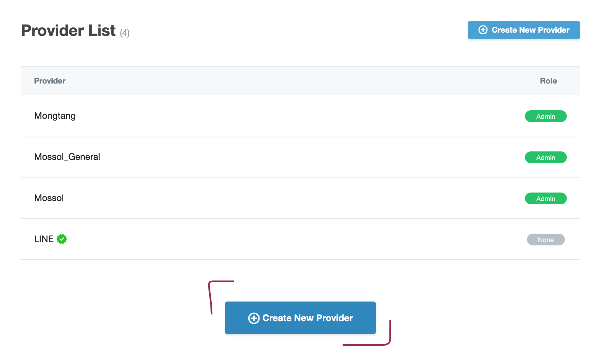
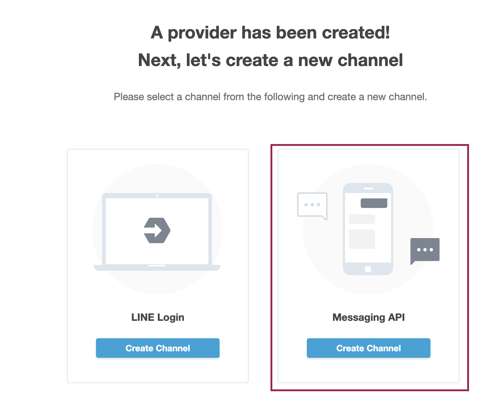
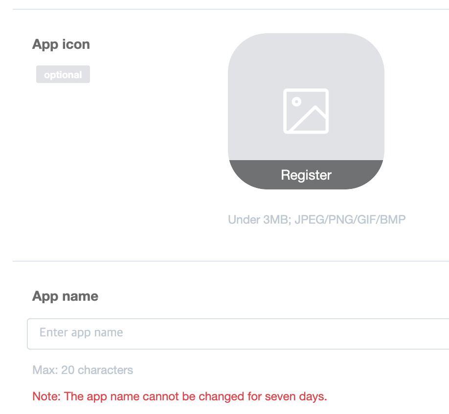
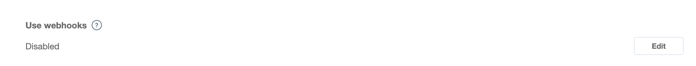
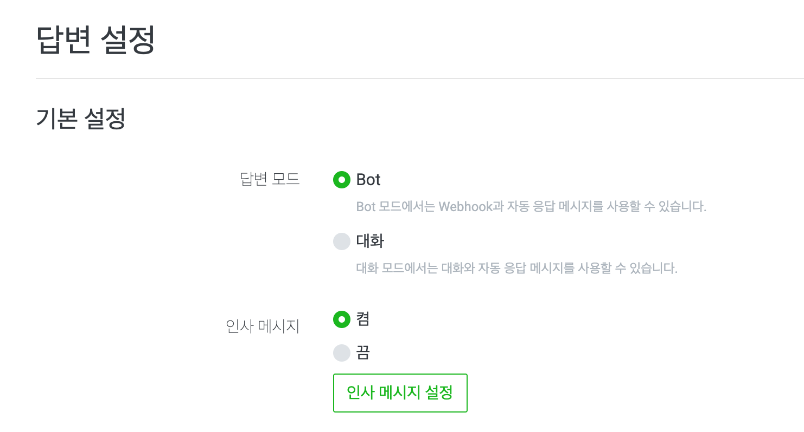
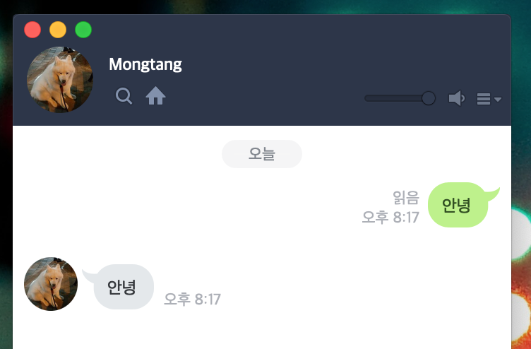

Open College -
Bot개발로 시작하는 프로그래밍 프로젝트
Session #7 2019/09/27
Created by
Amos Dawn
## Today's TODO * <bdi style="color:skyblue;">[40 min.]</bdi> Http 통신에 대한 복습 * <bdi style="color:skyblue;">[70 min.]</bdi> Bot 제작 복습 * <bdi style="color:skyblue;">[10 min.]</bdi> Break time * <bdi style="color:skyblue;">[40 min.]</bdi> 좀 더 Bot다운 Bot을 만들어보자
## Today's Objective * Bot 제작 준비를 슬슬 해보자!
### Bot만들기 한걸음! 두둥! * line bot library 설치 * 자동 응답 코드 짜기 * bot 계정 생성
### LINE Bot Library 설치 * line-bot-sdk를 설치합니다. ``` pip install line-bot-sdk ```
### 기본 뼈대 코드 * https://github.com/line/line-bot-sdk-python ``` from flask import Flask, request, abort from linebot import ( LineBotApi, WebhookHandler ) from linebot.exceptions import ( InvalidSignatureError ) from linebot.models import ( MessageEvent, TextMessage, TextSendMessage, ) app = Flask(__name__) line_bot_api = LineBotApi('Your Channel Access Token') handler = WebhookHandler('Your Channel Secret') @app.route('/callback', methods=['POST']) def callback(): # get X-Line-Signature header value signature = request.headers['X-Line-Signature'] # get request body as text body = request.get_data(as_text=True) app.logger.info("Request body: " + body) # handle webhook body try: handler.handle(body, signature) except InvalidSignatureError: print("Invalid signature. Please check your channel access token/channel secret.") abort(400) return 'OK' @handler.add(MessageEvent, message=TextMessage) def handle_message(event): line_bot_api.reply_message( event.reply_token, TextSendMessage(text=event.message.text)) if __name__ == '__main__': app.run() ```
### Bot 계정 생성 * https://developers.line.biz/en/ * Login 후 Create New Provider 선택 * 이후 기본적인 내용들을 채워서 Provider를 생성 
### Messaging API 이용 * Messaging API를 선택해줍니다. 
### Channel 정보 입력 * Bot의 이름과 이름을 지정해줍니다. 
### Channel Secret / AccessToken 입력 * Issue 버튼을 클릭하여 Secret, AccessToken을 발급받아, 아래 부분에 채워줍니다. ``` line_bot_api = LineBotApi('Your Channel Access Token') handler = WebhookHandler('Your Channel Secret') ```
### API Webhook 지정 * Webhook 주소로, https://{본인의 Heroku 주소}/callback 으로 지정합니다. 
### Heroku 배포 * lint-bot-sdk가 추가되었으므로, 라이브러리 목록을 재작성합니다. * 그 이후 Push 합니다. ``` pip freeze > requirements.txt ```
### Bot 상세 설정 * https://manager.line.biz/ * 답변 Mode를 Bot Mode로 설정 
### Bot 확인 * LINE에서 친구 추가를 하여 정상 동작하는지 확인합니다. 
### Bot만들기 두걸음! 두둥! * 특정 요청에 대한 응답 지정하기 * 특정 단어에 반응하기 * 랜덤으로 이야기 하기
### 특정 요청에 대한 응답 지정하기 * If 문을 이용하자 ``` @handler.add(MessageEvent, message=TextMessage) def handle_message(event): if event.message.text == "안녕": line_bot_api.reply_message( event.reply_token, TextSendMessage(text="안녕하세요!")) ```
### 특정 단어에 반응하기 ``` @handler.add(MessageEvent, message=TextMessage) def handle_message(event): if "도한" in event.message.text: line_bot_api.reply_message( event.reply_token, TextSendMessage(text="맥주한잔해요!")) ```
### 랜덤 응답하기 ``` from random import * @handler.add(MessageEvent, message=TextMessage) def handle_message(event): replyList = ["가위", "바위", "보"] reply = random.sample(replyList, 1) if event.message.text == "가위": line_bot_api.reply_message( event.reply_token, TextSendMessage(text=reply)) ```
THE END
Is there any questions?
-
amos.doan@gmail.com
-
mossol.net